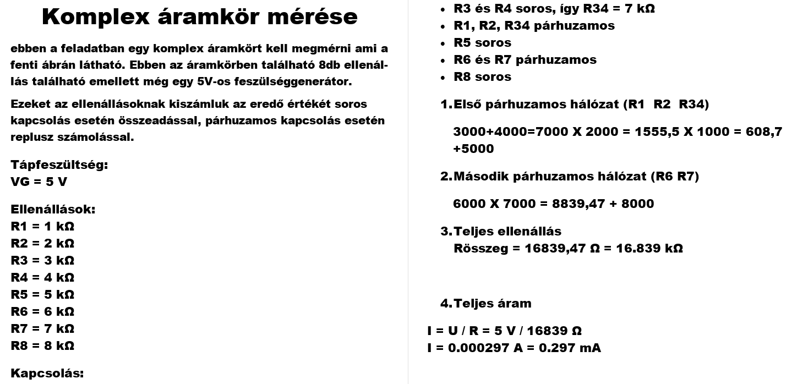
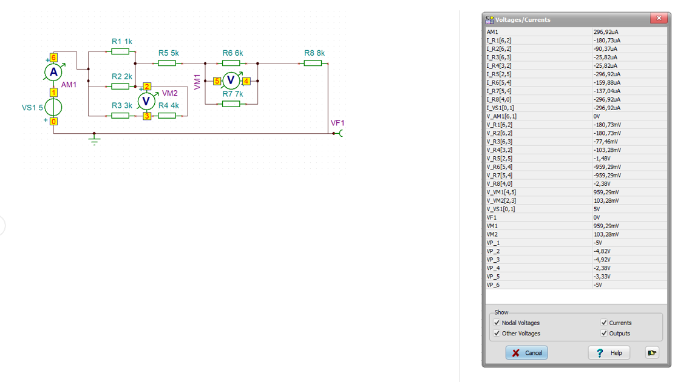

Tantárgy Ismertetése
Tantárgy: Számítógépes Szimuláció
Típus: Szimulációs gyakorlat
Célja: Elektrotechnikai mérnöki ismeretek
Ez az oldal a Számítógépes Szimuláció tantárgyban végzett szimulációs projektjeim dokumentációja. A gyakorlatok célja az elektrotechnika alapjainak megértése és alkalmazása szimulációs szoftverek segítségével.
1. Feladat: Komplex Áramkör Mérése
Áramkör Leírása
Egy összetett elektromos áramkör teljes szimulációja és elemzése. Az áramkör különböző alkatrészeket tartalmaz: ellenállásokat, feszültségforrásokat és mérőeszközöket.
Áramkör Diagramma
Áramkör és Táblázat
Mérési Eredmények és Adatok
Az alábbi mérések az áramkörön végzett valós szimulációs adatokból származnak. A mérések azt mutatják, hogy az áramkör a tervezett körülmények között hogyan viselkedik.
📊 Mérés Összefoglalása
- Feszültségmérés az áramkör különböző pontjain
- Árammérés az ágakban
- Teljesítményszámítás
- Ohm-törvény alkalmazása
- Kirchhoff-törvények ellenőrzése
Tanulási Eredmények
- Szimulációs alapok: Szoftverek használata elektrotechnikai szimulációhoz
- Áramköri analízis: Komplex áramkörök megértése és elemzése
- Mérési technikák: Virtuális mérőeszközök kezelése
- Elektrotechnikai alapelvek: Feszültség, áramerősség, ellenállás kapcsolata
- Adat gyűjtés és feldolgozás: Szimulációs adatok értelmezése
- Hibaanalízis: Mérési pontatlanságok és eltérések vizsgálata